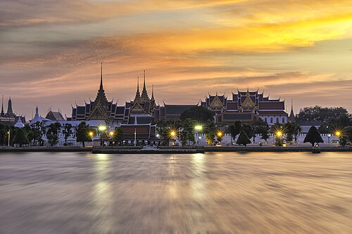
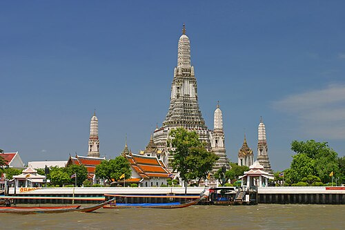
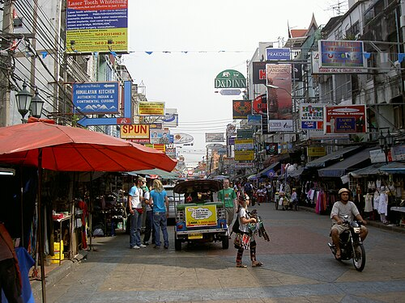

This map shows 17 of the most-searched sights in Bangkok as photo spots, ranked by how often people search for them: Grand Palace, Wat Arun, Khao San Road, Wat Pho and Baiyoke Tower II lead the list. Every spot has a pin on the subject and a phone icon showing where to stand, with tips for shooting it on your phone: which lens to use, how to frame it, a settings tip and the best time of day. Directions and Navigate buttons take you to the standing point on foot or by public transport. 3 spots are free to view; the full map is for members.
The 3 free photo spots
1Grand Palace

The Grand Palace is not one building but a walled complex of halls, pavilions, courtyards and lawns on the bank of the Chao Phraya River. Work began on 6 May 1782, when King Rama I moved the capital across the river from Thonburi to Bangkok. Later kings kept adding to it, so the styles are mixed and the layout is irregular. The whole site covers about 218,400 square metres and is divided into several quarters, including the Temple of the Emerald Buddha and the Outer, Middle and Inner Courts. It is still a working royal palace, and more than eight million people visit each year.
That variety is what makes it rewarding on a phone. Look for the walls, rooftops and spires of the palace, which make a strong, simple picture. Closer in, you can switch to close-up shots of rooflines, gables and decoration. The site is so large that one spot cannot show everything, so treat this as your wide establishing shot and then move closer.
Use the ultra-wide lens (0.5x) for the full sweep of wall and rooftops, and the telephoto lens for details. Keep your phone level, since the straight walls and tall spires look odd when tilted. Expect other visitors in the frame, and use them to show the scale if you like.
Where it is: In the Phra Nakhon District, on Rattanakosin Island, beside the Chao Phraya River in the old heart of Bangkok. Sanam Luang lies to the north and Wat Pho is just to the south.
Shooting it on your phone
Lens: Start with the ultra-wide lens (0.5x) to take in the length of the wall and the rooftops behind it. Then switch to the default lens (1x) for a calmer, less stretched view, and use telephoto (2x-5x, depending on your phone) to pick out roofs, spires and decoration.
Where to stand: Stand about 110 m south-west of the subject, at the phone icon on the map, and face north-east. Move a few steps sideways if people or vehicles block the view.
Framing: Switch on the gridlines and line the walls up with the horizontal grid lines so they stay straight. Leave a band of sky above the roofs and spires so they are not cropped. Use telephoto for a tighter second shot of a single roofline.
Settings tip: Tap on the brightest roof or wall to focus, then lower the exposure slider a little. Bright sky and pale walls can fool the phone into making the scene too light or too dark. Check the corners of ultra-wide shots for stretched people or poles.
Best time: Go early in the morning, when the site is quieter and the light is softer. Midday sun is harsh and the light bounces off pale surfaces, so check your shots on screen.
2Wat Arun

Wat Arun, the Temple of Dawn, is the tall, pale prang that rises over the western bank of the Chao Phraya River. The temple has been here since at least the 17th century, but the prang you see today dates from the early 19th century. It was finished in 1851 after about nine years of building. Its height is often given as anywhere between roughly 67 and 86 metres. Up close, the surface is covered in bits of porcelain and shell. Four smaller prang stand at its corners. A big restoration between 2013 and 2017 gave it the brighter, whiter look it has now.
It photographs well because the shape is so clear and the river gives you open space around it. The best-known view is from Tha Tien on the opposite bank. From there the whole prang sits across the water, and at sunset the sun can fall behind or beside it, with its reflection in the river. Guides describe this as the classic postcard angle, and it is a free public walkway. The late-afternoon crowd gathers there, so arrive about 30 minutes before sunset to find a spot. Two alternatives are a riverside point reached by a lane off Maha Rat Road, and the temple grounds themselves, where you can fill the frame with the prang or take a full-length shot of a friend in front of it.
Where it is: Wat Arun is in Bangkok Yai district, in Thonburi on the west bank of the Chao Phraya River. The recommended viewpoint, Tha Tien, is on the east bank, across the river and to the north-east of the temple.
Shooting it on your phone
Lens: Start with the default lens (1x) to get the whole prang, the river and the sky in one frame. Use 2x or more only if you want a tighter shot of the spire and its decoration. Keep the ultra-wide (0.5x) for wide scenes with lots of sky, as the temple will look small in it.
Where to stand: Stand on Tha Tien (east bank, riverside in front of the pier, facing west across the Chao Phraya; stand clear of the ferry gangway). The whole white prang across the river, with the sun setting behind or beside it and its reflection in the water. The whole white prang sits across the water to the south-west, with the river and its reflection in front. Keep clear of the ferry gangway so you do not block passengers.
Framing: Turn on gridlines and put the prang on one of the vertical lines, with the river filling the lower third so the reflection shows. Wait for a gap in the crowd and keep the phone level so the spire stays upright. If you want a different angle, try the lane viewpoint off Maha Rat Road for a view of the central prang rising above the river.
Settings tip: Tap on the sky near the prang to set focus, then drag the exposure slider down a little so the sunset colours stay rich and the temple does not turn into a flat silhouette. After the floodlights come on, switch to night mode and rest your elbows on a railing or wall to keep the phone steady.
Best time: About 30 to 40 minutes before sunset for golden light, then stay for the blue hour once the floodlights come on. Sunset times change through the year, so check the time for your date. One guide says the sun sets almost directly behind the prang from mid-February to mid-March.
3Khaosan Road

Khaosan Road is a short, lively street in Bang Lamphu, laid out in 1892 and only about 410 m long. The name means milled rice, a nod to the area's older rice trade. Today it is known worldwide as a backpacker base, with guesthouses, market stalls, travel agents, bars and street food all packed into one stretch. That mix is why it photographs well: signs, stalls, food carts and people from all over the world fill every frame, and the mood changes a lot between day and night. The street was redone as a walking street in 2020, with vendors given allotted stalls, so the layout is tidier than older photos suggest. Just across from the road to the west stands Wat Chana Songkram, a centuries-old royal temple, which is a calm contrast if you want a quieter shot nearby. From the phone icon on the map you look south-east along the street towards its middle, so you can show its length, the crowd and the signs in one picture. Keep your phone close to your body in busy moments and take a few frames rather than waiting for a perfect one. Around 13-15 April, the Songkran water fights can fill the road, so protect your phone if you plan to take pictures then.
Where it is: Khaosan Road is in the Bang Lamphu area of Phra Nakhon District, in central Bangkok, about 1 km north of the Grand Palace and Wat Phra Kaew. Wat Chana Songkram is directly opposite the road to the west.
Shooting it on your phone
Lens: Start with the default lens (1x) for natural street views. Switch to ultra-wide (0.5x) to fit in the full width of the street, or to the telephoto lens (2x-5x, depending on your phone) to pick out signs and faces without stepping into the crowd.
Where to stand: Stand about 140 m north-west of the subject, at the phone icon on the map, and face south-east. Face south-east and look along the road towards the centre of the street.
Framing: Turn on gridlines and place the road along a line so it leads the eye into the picture. Include signs and stalls in the foreground for depth. Try a telephoto shot (2x-5x) for a tighter, busier look. Hold the phone steady against your body or a wall for sharper night shots.
Settings tip: Tap the brightest sign to focus, then drag the exposure slider down slightly so neon lights don't wash out. After dark, let night mode do its work and hold still for the full exposure. A Live Photo can catch people moving through the frame.
Best time: Evening, once the bars and signs are lit, is the liveliest time for colour and atmosphere. Earlier in the day it is generally calmer and easier for clear, uncluttered views.
14 more spots for members
These spots are on the map as grey numbered pins. Where to stand, the phone tips, photos and directions for them come with Explorer membership.
- 4Wat Pho · members
- 5Baiyoke Tower II · members
- 6Lumphini Park · members
- 7Wat Saket · members
- 8Wat Phra Kaew · members
- 9Yaowarat Road · members
- 10MahaNakhon · members
- 11Giant Swing · members
- 12Jim Thompson House · members
- 13Wat Traimit · members
- 14Erawan Shrine · members
- 15Wat Suthat · members
- 16Democracy Monument · members
- 17Asiatique The Riverfront · members
Get every spot with Explorer membership
Explorer opens every spot on every map in the library: where to stand, how to frame it on your phone and how to get there, plus the Xdatrys Maps app with maps saved on your phone for use without signal. $9.99 a month or $59.99 a year; cancel any time.
Join Explorer Compare free and Explorer
Not ready to join?
Get Pocket Lens, our free daily smartphone travel photography newsletter.
Free, and you can unsubscribe at any time. If the form does not show, sign up on our newsletter page.
Questions
What are the top photo spots in Bangkok?
The first three on this map are Grand Palace, Wat Arun and Khao San Road. They are ranked by how often people search for them. The full map has 17.
Where should I stand to photograph the Grand Palace?
Stand about 110 m south-west of the Grand Palace, at the phone icon on the map, and face north-east. Start with the ultra-wide lens (0.5x) to take in the length of the wall and the rooftops behind it.
When is the best time to photograph Wat Arun?
About 30 to 40 minutes before sunset for golden light, then stay for the blue hour once the floodlights come on. Sunset times change through the year, so check the time for your date.
How do I get to Khao San Road?
Check a local map app for the best route to the Bang Lamphu area, just north of the Grand Palace.
Credits
Map data © OpenStreetMap contributors (ODbL); base map built with Protomaps from OpenStreetMap data. Photos from Wikimedia Commons, credited under each photo with their licence. Background reading for the free spots: Grand Palace, Wat Arun, Khaosan Road (Wikipedia, CC BY-SA). Access rules and opening times change: check before you go.